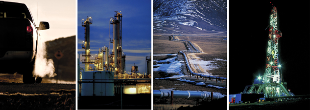

Module 5—Hydrocarbons and the Petroleum Industry
Lesson 6—Environmental Impact of Fossil Fuels and Alberta’s Oil Industry
 Get Focused
Get Focused

Far left: © JohnnyZ/shutterstock; balance: © 2008 Jupiterimages Corporation
Earlier in this module you collected photographic evidence of the petroleum industry’s activity in your local area. You may also have taken pictures of the industry's effect on your community. Even if you did not take these photographs, you can probably list many examples of the industry's impact.
In this lesson you will expand your consideration of the petroleum industry's impact. You will use the evidence you collected, including your photographs and lists, to consider the impact of hydrocarbons from fossil fuels from a local, provincial, national, and international level. You will also research current trends in, and concerns regarding, the petroleum industry and some possible directions for its future.
Consider the following questions as you complete Lesson 6:
-
What processes in the petroleum industry impact the environment?
-
What effect does the reaction of hydrocarbons have on the environment?
-
What opinions does society have with respect to the petroleum industry?
 Module 5: Lesson 6 Assignment
Module 5: Lesson 6 Assignment
Download a copy of the Module 5: Lesson 6 Assignment to your computer now. You will receive further instructions on how to complete this assignment later in the lesson.
In this lesson you will also consider what you have learned about the petroleum industry, and you will identify questions about the future of this industry you feel need to be considered.
You must decide what to do with the questions that are not marked by the teacher.
Remember that these questions provide you with the practice and feedback that you need to successfully complete this course. You should respond to all the questions and place those answers in your course folder.